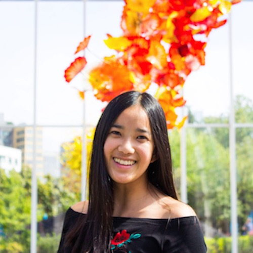
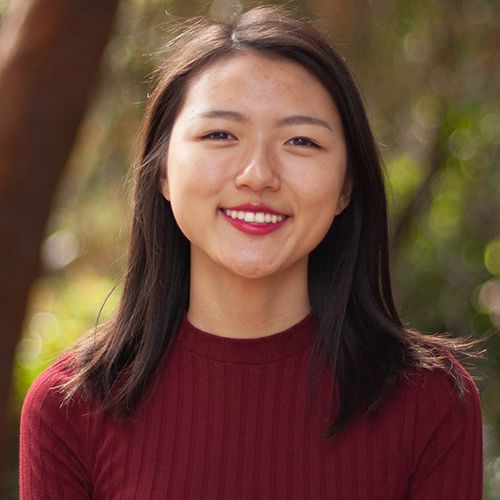
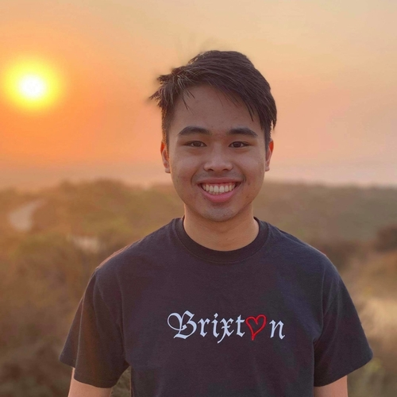
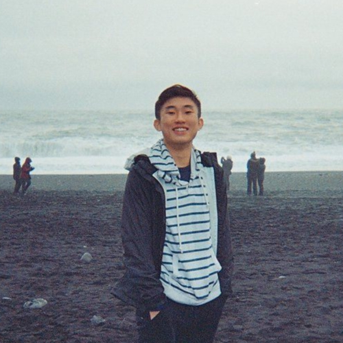

Staff
Instructors¶
 Swupnil Sahai (bio) I love solving problems in A.I. & computer vision. When I'm not lecturing or working on my sports startup, I'm probably playing tennis, traveling with my fiancé or being autonomously driven by my Tesla.
swupnil@berkeley.edu
|
 Babak Ayazifar
ayazifar@berkeley.edu
|
Teaching Assistants ((u)GSIs)¶
 Aanika Shah (bio)
aanika.shah@berkeley.edu
|
Alvin Yu (bio) Hi friends! I'm a senior studying business and data science and I love playing basketball, going for runs, watching Avatar the Last Airbender, and helping others learn. My Berkeley starter-pack includes the 8th floor of Unit 1 Putnam, Doe Library, GBC's chicken quesadillas, Sheng-Kee buns, and the homies on Benvenue, Channing, and Ellsworth.
alvinyu27@berkeley.edu
|
 Ananya Krishnan (bio) Hey! I am a senior studying cognitive and computer science from sunny San Diego. I am interested in learning about data visualization, economics & finance and decision making. In my free time, I enjoy watching TED Talks, going on hikes, attempting to bake, and eating lots of ice cream. I am excited to be part of the Data 8 staff this year and hope to e-meet you this Spring!
ananya.krishnan@berkeley.edu
|
Angela Guan (bio) My name is Angela Guan, and I am from San Jose, CA. I am a 4th year studying Data Science, and I love Data 8! I am on the Cal Table Tennis team, and I enjoy going to beaches, hiking, baking, and traveling. Looking forward to meeting you!
guanangela@berkeley.edu
|
 Angela Zhou (bio) Hello!! I am a fourth-year studying data science with a domain emphasis in cognition. This will be my 5th semester on Data 8 staff :') I came to UC Berkeley to follow in the footsteps of my Albuquerque alumnus, Troy Bolton. In my free time, I love to binge Netflix (I know almost all the words to HIMYM and Friends), listen to music (I really like EDM and alternative indie; hmu with any song reccs!), and get boba with my friends. If you ever have any questions or just want to talk, please feel free to reach out! :)
zhoa210@berkeley.edu
|
 Anuja Lohia (bio) Hi everyone! I'm a third year Computer Science major with a minor in Conservation and Resource Studies. Feel free to reach out to me if you want Netflix recommendations or to discuss Harry Potter/Brooklyn Nine-Nine/Data 8. Super pumped to meet you all let's have a great semester!
anujalohia@berkeley.edu
|
 Brett Irvin (bio) I'm a Senior studying Business and minoring in Data Science from the LA area. I love reading and cooking!
brettirvin@berkeley.edu
|
 Carlos Ortiz (bio) Hey there! I'm Carlos, a first-generation junior majoring in Data Science with an emphasis in Sustainable Development and Engineering. I love all things related to dogs, coffee, skincare, and instrumental music/performance!
carlosortiz@berkeley.edu
|
|
Connor Clark (bio) I am a senior from Burlingame, California studying data science with an emphasis in applied math and modeling. I love baseball, skiing, surfing, and anything else outdoors. Excited to spend my final semester teaching my favorite course!
connorcclark@berkeley.edu
|
 Devarsh Dhanuka (bio) Hi everyone! I am a Junior majoring in CS and Economics and this is my semester as a uGSI. Data 8 has been one of my favorite classes at Cal and I hope you all love it as much as I did! In my free time, I love watching sports (I'm a huge Chelsea fan), binge-watching HIMYM and Friends, and playing FIFA with my friends.
devarshdhanuka@berkeley.edu
|
Deven Barth (bio) I’m a fourth year student majoring in data science and minoring in EECS. Originally from Louisville, Kentucky, I have also lived in Arizona and the Bay Area prior to coming to Berkeley. Some of my interests include landscape and urban photography, hiking, and exploring new places, whether it’s local around the East Bay or across the country/the world. This will be my fifth semester on the Data 8 course staff, and I look forward to another great semester together!
devennb@berkeley.edu
|
Ellen Persson (bio) Coming back to Data 8 for my fifth semester on staff, I'm a junior majoring in Engineering Mathematics and Statistics. I'm a Bay Area native, though I was born in Stockholm, Sweden. In my free time, I play Ultimate Frisbee with the women's team here on campus. I'm super excited to be a part of Data 8 this semester, and I hope you all have a great time taking it!
nellepersson@berkeley.edu
|
 Eshaan Soman (bio) Live. Laugh. Data 8.
eshaansoman@berkeley.edu
|
Franco Achacoso (bio) Hey everyone! My name is Franco Achacoso, I'm from Los Angeles (closer to Culver City), and I'm happy to be teaching Data 8 in my last semester before completing my Data Science degree with a domain emphasis on Businesses and Industrial Analytics. I like playing volleyball, playing video games like League, Genshin Impact, and Valorant, and most importantly teaching Data 8! Since Data 8 was my first time coding, it holds a dear place in my coding heart and I hope I can help give you the same kind of experience I had!
fachacoso@berkeley.edu
|
Grace Li (bio) I'm a 4th year statistics and computer science major that bakes and cooks quite a bit. Looking forward to meeting all of you virtually this semester!
fqzbdkh@berkeley.edu
|
Gregory Du (bio) https://www.youtube.com/watch?v=aUZMJ8SOqfU
gregoryd2017@berkeley.edu
|
 Gregory King (bio) Find out who I am by looking through previous semesters' staff bios but watch this first: https://www.youtube.com/watch?v=stZ_y6ZmRps
gregking22@berkeley.edu
|
 Jacqueline Yu (bio) Hello! I'm an third year from the East Bay Area studying data science with a domain emphasis in cognition. In my free time, I often can be found recommending new Trader Joe's products to my friends, drinking passion fruit green tea w/ lychee jelly, laughing at dog memes, and secretly watching bad reality TV shows.
jacquelinekyu@berkeley.edu
|
Jifu Li (bio) One last ride
jifu.li@berkeley.edu
|
Joyce Zheng (bio) Hi everyone! I'm a junior from Naperville, Illinois (suburb of Chicago!) studying Data Science and Public Health. In my free time, I love to explore new foodie places, bullet journal, and go on spontaneous trips with my friends (twin peaks at 2am, anyone?). I'm super excited to meet all of you this semester!
joyceezheng@berkeley.edu
|
 Kanika Ahluwalia (bio) Hi all! I'm a 4th year studying Data Science from SoCal. In my spare time, I enjoy watching travel vlogs, exploring new coffee shops (my favorite has to be Philz), and hiking to see sunsets/sunrises with friends. This is my third time being a uGSI and I am super excited to meet you all!
kwalia1999@berkeley.edu
|

Katherine Tsai (bio) Hi everyone! I am a senior from Palos Verdes, CA studying Data Science and Cognitive Science. In my free time I like to take naps, dance, or get gelato with friends. Data 8 has been one of my favorite classes so far, and I am excited to get to know everyone this semester!
katherinetsai@berkeley.edu
|
Kevin Miao (bio) Hey you! My name is Kevin Miao, a senior from the Netherlands who studies Computer Science. I get super excited about workouts, cooking, being outside, and Taylor Swift's music. Machine learning and precision medicine hold a special place in my heart. Shoot me an email if you have any questions or just want to chat. (Bet)
kevinmiao@berkeley.edu
|
 King Han (bio) Hi everyone! I'm a junior studying math and CS. I'm the chief poop-scooping officer for a cat named Tata (check out my website for pictures of her!). In my free time, I like thinking about education and politics (in particular, anything related to China). I hope you enjoy Data 8!
kingh0730@berkeley.edu
|
|
Laeticia Yang (bio) Hi everyone! I'm a second year majoring in data science and economics. I'm from the South Bay and in my free time I like to read, journal, watch shows, and jam out to music. I'm super excited to be a UGSI this semester and can't wait to meet you all!
laeticiayang@berkeley.edu
|
 Logan Ritter (bio) I am a senior majoring in Computer Science with a minor in Data Science. I was born and raised in Northeast Ohio. I spend my free time hiking, biking, playing ultimate frisbee, and hanging out with my roommates. I also love listening to all types of music. I am excited to meet you all!
lritter@berkeley.edu
|
 Margaret Misyutina (bio) Hi everyone! I'm a junior from San Diego majoring in Data Science and minoring in Computer Science. I absolutely LOVE teaching Data 8; this is my sixth semester on staff! In my free time I enjoy exploring SF, watching sunsets, petting cats, and making smoothies :)
marmis@berkeley.edu
|
 Meghan Wang (bio) Hi everyone! I'm a third year studying Industrial Engineering and Operations Research. I'm originally from SoCal but have loved exploring the Bay Area! Outside of classes, I enjoy sewing, re-watching Marvel movies, and making friends karaoke with me.
meghanwang@berkeley.edu
|
 Melissa Wong (bio) Hi!!! I'm a third year studying Computer and Data Science, and I'm so excited to be a uGSI for the Spring 2021 semester! I fell in love with Data 8 when I took it my first semester at Cal and I hope I can make your experience as great as mine was (: I'm originally from SoCal and I love talking Marvel, design, and web dev. See you all on ~zoom~!
melissarwong@berkeley.edu
|
 Natalie Gomas (bio) Hey guys! I'm a senior studying Data Science and this is my sixth semester on Data 8 course staff. I love hiking in the Bay Area and spending time with my friends. I'm looking forward to meeting you all, even if it's over zoom!
nataliegomas@berkeley.edu
|
Neha Haq (bio) Hey!! I am a junior from the Bay Area studying Statistics and Data Science! Outside of school, I love to eat and bake anything chocolate (obsessed); hoping to cut that down as we start the new year! Looking forward to a sweet semester of learning data science :)
nwhaq1@berkeley.edu
|
Nicole Park (bio) Hello! I'm a second year double majoring in Data Science and Economics. When I'm not in school and not trying to avoid a global pandemic, I enjoy live music (concerts, musicals, etc.), in-theater movies, and grocery shopping ALL the time. I loved Data8 and can't wait to meet y'all!
nicolepark@berkeley.edu
|
 Noor Hanafi (bio) Hi! I'm a junior studying Economics and Data Science. I enjoy listening to podcasts, trying out new recipes, and traveling. I can't wait to meet all of you virtually this semester!
nhanafi@berkeley.edu
|
 Parham Rouzbahani (bio) A friendly reminder that the Toronto Raptors are your 2019-2020 NBA Champions. Without that out of the way, I'm a business & data science loving senior from Toronto, Canada, eh? I'm a huge fan of dogs, board games, traveling and snow.
parouz@berkeley.edu
|
 Pulkit Bhasin (bio) Hey everyone! I am a sophomore studying Computer Science. This will be my 4th semester as part of the Data8 course staff, and I am super excited for this semester! In my free time, I like to watch/play soccer (GGMU) and cricket, read books, and go hiking.
pulkitb124@berkeley.edu
|
 Rita Wang (bio) I am currently a third year majoring in Computer Science and Data Science. In my free time, I like to explore photography, videography, listen to music, and watch movies. Recently I've been trying to get into long distance running.
ritawang@berkeley.edu
|
|
Ritvik Iyer (bio) I’m a Junior majoring in Statistics from Anaheim, CA, the home of Disneyland. When I’m not teaching Data Science, I love watching thriller TV shows and rooting for the Lakers. Looking forward to (virtually) get to know many of you!
rikiiyer@berkeley.edu
|
 Ruhi Doshi (bio) Hi! I'm Ruhi, a third year Data Science and Operations Research major from Minnesota. I'm excited for my fifth semester on staff! I love hiking to new spots (currently exploring new parts of the fridge!), playing board games (online and offline), and exercising my thumbs scrolling on TikTok. Say hi—I'm always down to chat!
rdoshi99@berkeley.edu
|
 Ryan Chien (bio) Hello!! I'm Ryan, a fourth year Data Science Statistics double major from Irvine, CA! In my free time I like to play Smash Ultimate, go swimming, take photos, and watch the Lakers! I'm super excited to meet and work with everyone this semester!
ryanchien04@berkeley.edu
|
 Sam Wu (bio) Hey there! I am a senior studying Computer Science and Statistics, and this will be my seventh semester on course staff and fifth semester as a uGSI for Data 8! I'm from Vancouver, Canada, and I love to learn about the different cultures of the world (I speak English, Mandarin, and French)! Hit me up if you like anime, food, traveling, or learning new languages!
samwu101@berkeley.edu
|
|
Sarah Ding (bio) Hi everyone! I am a senior studying Economics and Data Science and I am so excited to be a part of course staff again this semester. Although this semester may look different, I'm looking forward to getting to know you all and making Data8 as enjoyable of an experience for you as it was for me. During my free time I love watching basketball (Go Suns!), cooking, and chilling in the outdoors. Can't wait to meet you!
sarahding815@berkeley.edu
|
Sarina Xin (bio) Hi I'm Sarina, a 4th year studying Industrial Engineering and Operations Research. This is my last semester at Cal and 5th semester on Data 8 course staff. I love cute cafes, failing to keep plants alive, and spicy teas. Excited to meet everyone!
sarina.xin@berkeley.edu
|
 Sophia Tan (bio) Hi everyone! I'm a fourth year from SoCal studying Molecular and Cell Biology and Data Science. I love binge-watching (and rewatching) shows, sunsets, and puzzles! I'm excited to meet you all and hope you enjoy the class!
sophiatan@berkeley.edu
|
Stephanie Djajadi (bio) Hello! I'm a fourth year studying CS from SoCal. I love fluffy dogs, good food, exploring nature, and watching sunsets. I really enjoyed Data 8, and I'm looking forward to a great semester!
sdjajadi@berkeley.edu
|
 Sunny Shen (bio) Hi guys, I'm a Junior studying Data Science and Economics. Data 8 really opened my eyes to the world of Data Science, and I've been in love with this subject ever since then :) Hope I can help make your experience in Data 8 gr8t!
sunnyshen@berkeley.edu
|
 Sydnie Zanone (bio) Hi! I'm Sydnie, a third year from San Jose majoring in computer science. In my free time I like practicing the piano, spending too much money on Happy Lemon, and falling down Youtube rabbit holes. Looking forward to working with you all this semester!
sydniezanone@berkeley.edu
|
 Tamara Vilaythong (bio) Senior from San Diego majoring in Comp Sci. This is my 4th semester as a head TA, and my 6th semester teaching Data 8. I just wanna graduate
tvilayth@berkeley.edu
|
 Thomas Huo (bio) Hello! I'm Thomas Huo, a senior studying Data Science with a minor in Computer Science. I'm excited to help teach my favorite class at Cal, so please feel free to contact me with any questions! If you're interested in coffee, dogs, Christianity, or data science, send me an email!
jinhao.huo@berkeley.edu
|
|

Tong Shen (bio) Hi! I'm Tong, a third year majoring in Data Science and Economics. Data 8 is an amazing class and I hope you'll love it! Feel free to ask me anything!
tongshen@berkeley.edu
|
Vaibhav Pabreja (bio) 1 part cognitive science, 1 part data science, 2 parts geek, 3 parts musician. Too many parts? Hi, I'm Vaibhav, but I go by VP. I am an international student hailing from Dubai (yes, its true, we ride camels to work). I'm super excited to meet y'all!
vaibhav.pabreja@berkeley.edu
|
 Vikram Chandran (bio) Hey everyone! I'm a chocolate volcano and ping pong lover who watches too much Netflix & HBO. The Dark Knight is my favorite movie of all time. I'm also a competitive swimmer!
vikramchandran@berkeley.edu
|
Winifred Chung (bio) Come to my section to learn more :)
winifredchung@berkeley.edu
|
 Yanay Rosen (bio)
yanayrosen@berkeley.edu
|
Tutors¶
|
Aarushi Karandikar (bio) Hi everyone! I'm a junior studying data science and this will be my second semester as a Data 8 tutor. I love reading, finding new food spots, and making Spotify playlists. Looking forward to e-meeting y'all this semester!
aarushi.k@berkeley.edu
|
 Anna Zhao (bio) Hello! I took Data 8 my first semester of freshman year and have loved Data Science ever since. I recently got a Pomsky Shih Tzu puppy named Cookie and am obsessed. Outside of school, I love to write, try new food places, discover new music, and occasionally play a certain mushroom game.
anna_zhao@berkeley.edu
|
 Ashika Raghavan (bio) Hey y'all! I'm a junior from SoCal studying Anthropology and Linguistics, and minoring in Education. When I'm not in classes, I enjoy being involved with the campus yearbook (shoutout to Blue & Gold!), binging tv shows, and spending time with friends. I'm super excited to be returning as a tutor for Data 8, and look forward to getting to know all of you!
ashika-raghavan@berkeley.edu
|
Autumn Wang (bio) Hi! I'm Autumn, a second year studying Data Science and Cognitive Science. I took Data 8 my freshman year fall and really enjoyed it and joined the course staff the very next semester! I love exercising but am also a huge foodie so it's kind of a balancing equation :)
autxwang@berkeley.edu
|
 Drew Suranjan (bio) I am a Business Major and Data Science Minor student. I was born in the US, but lived most my life in China and Singapore. I love sports, traveling and Mexican food.
drewsuranjan@berkeley.edu
|
 Edward Liu (bio) My name is Eddie and I'm a sophomore studying data science and economics. My professional interests lay somewhere within the intersection of tech, analytics, and business. In my free time, I enjoy playing basketball and Spikeball as well as listening to EDM and rap.
efliu@berkeley.edu
|
Ellen Kwok (bio) Hi! I'm a third year studying Cognitive Science and Data Science and this is my second semester on course staff! Super excited to meet y'all!!
ellenkwok882@berkeley.edu
|
 Elliott Shadgoo (bio) What's up everyone! I'm Elliott and I'm a third year econ and data science major. This is going to be my fourth semester on staff and I can't wait to introduce you all to one of my all time favorite classes at Cal :)
eshadgoo972@berkeley.edu
|
 Emily Guo (bio) Hey! I'm a sophomore studying Data Science and Economics. In my free time, I like to travel, listen to music, and watch YouTube videos. Looking forward to meeting you all!
lingjunguo@berkeley.edu
|
 Grace Yi (bio) Hi! I'm Grace, a second year studying computer science. I love doodling and watching dramas in my free time. I can't wait to meet everyone, albeit virtually!
graceyi89@berkeley.edu
|
Haoyun Hong (bio) I am a junior data science major. I love hiking, cats, and Aaron Sorkin scripts.
haoyunhong@berkeley.edu
|
Jack Chen (bio) Yoo! My name is Jack and I am studying computer science & economics. Enjoy playing and watching basketball, tennis, ping pong. Avid sunset and city lights admirer.
ichiachen1@berkeley.edu
|
 Jessie Houng (bio) Hi everyone! I'm a junior pursuing degrees in Data Science and Economics, but outside of courses I love to draw, cook, and spoil my cat. My secret to staying motivated: Gordon Ramsay Hell's Kitchen rage compilations.
jeshoung@berkeley.edu
|
 Josh Greenberg (bio) I am a junior studying Business Administration and minoring in Data Science. In my free time, I love to ski, hike, travel, and spend time with friends and family. Data 8 has been one of my favorite classes at Berkeley, and I am looking forward to a great semester!
joshgreenberg@berkeley.edu
|
 Kanchana Samala (bio) I am a sophomore studying Data Science and pursuing the Calteach minor. I am the President of SKY Campus Happiness Club at Berkeley and I meditate daily. I am available to listen and talk about anything, please feel free to reach out!
kanchoo@berkeley.edu
|
Matthew Moon (bio) Hi everyone! I'm a third-year studying Data Science and Urban Planning. Outside of academics, you'll probably see me on campus giving tours to prospective students (and trip while walking backwards), or designing pages for Berkeley's yearbook. Looking forward to meeting everyone as a first-time tutor this semester!
sjmoon21@berkeley.edu
|
 Michelle Louu (bio) Hi! I'm Michelle and I'm a third year studying Data Science with an emphasis on inequalities in society. Data 8 has been my favorite class at Cal and I'm looking forward to meeting you all :)
michellelou@berkeley.edu
|

Nicholas Ha (bio) Hey! I'm a third year cs major from Orange County, CA. I enjoy binge-watching tv shows and going on late night food runs. Looking forward to a great semester with you all!! :)
nickha@berkeley.edu
|
Olivia Chang (bio) Hi everyone! I'm Olivia, a junior studying Statistics and Data Science. I love traveling and hiking, and my newest quarantine task is taking care of our new goldendoodle puppy. Excited to meet you this semester!
o.chang@berkeley.edu
|
Oscar Bjorkman (bio) Hi everyone! I'm Oscar and I'm a second year studying Computer Science. In my free time I enjoy playing tennis, exploring new food, and travelling. Fun fact: I'm half Swedish and half Chinese.
oscarb@berkeley.edu
|
 Raymond Lui (bio) I'm a second year student from San Francisco majoring in EECS and minoring in Data Science. Since you won't have the chance to see me in person this semester, it's worth mentioning that I'm 6'3".
ralui@berkeley.edu
|
 Raymond Wang (bio) Hello! I like tabasco brain ice cream and I don't like commas. I really enjoyed Data 8 and I hope I can help you develop some enjoyment for this class as well. Looking forward to a great semester!
raymondwang@berkeley.edu
|
Rebecca Hu (bio) Hi! I am second year student from Potomac, Maryland studying data science and economics. I love sunsets, boba, and dogs and I'm super excited for a fun virtual semester!
rhu01@berkeley.edu
|
 Rimika Banerjee (bio) "Hi there!! I'm a southern gal from Mississippi, and I'm currently a junior studying EECS and Business. I've been on Data 8 course staff since my freshman year. In my free time you'll find me making tiktoks, dancing to 2000s bops, watching reality TV, or going on some adventure :)
rimikabanerjee@berkeley.edu
|
 Rithvik Sunku (bio) I'm a second year studying Data Science and Business with an emphasis in Business Analytics. In my free time, I love checking out new food spots, going on day trips, listening to music, and watching basketball or baseball (Go A's!). Look forward to meeting y'all this semester!
rithviksunku@berkeley.edu
|
 Rujula Muralidhar (bio) I am a sophomore studying Data Science and Economics and I took Data 8 my freshman fall and absolutely fell in love with the course, so much so that I decided to major in Data Science! I have been an AI for two semesters and I am very excited for my first semester as a tutor! In my free time, I love to dance, travel (pre-covid), and I look forward to meeting you all :)
rujulam@berkeley.edu
|
 Ryan Huntley (bio) I am a sophomore EECS major interested in machine learning and software engineering. I'm also involved in the Engineering Student Council at Berkeley, and in my free time I enjoy discussing politics and playing board games.
ryanhuntley23@berkeley.edu
|
 Selena Lu (bio) Hi! I’m a third-year studying Data Science and Public Health. In my free time, I love taking walks, trying new food and boba places, and going on spontaneous trips. I’m super excited to be a tutor this semester and I’m looking forward to meeting you all!
selenalu@berkeley.edu
|
|
Shayan Ghosh (bio) Hello! I'm a second year studying data science, computer science, and city planning. I'm from Sacramento, and I like knitting :)
shayan.ghosh@berkeley.edu
|
Stephanie Xiao (bio) Hi! I'm a second-year CS major from San Jose. I have a cockatiel named Charlie, and he loves singing Jingle Bells and jamming out to Ariana Grande. I also spend way too much time watching k-dramas and playing league. Nice to meet you all!
stephaniex@berkeley.edu
|

Takao Kakegawa (bio) Hi everyone! My name is Takao and I am a junior majoring in Applied Mathematics. Data 8 has been one of my favorite classes at Cal and I hope you all enjoy it as much as I did! Feel free to reach out if you have any questions or just want to chat!
takaokakegawa@berkeley.edu
|
 Tony Yu (bio) I am a second year studying Data Science and Economics. In my free time, I like sleeping, eating, cooking, binging shows, taking day trips, and watching soccer (GGMU!). I love Data 8, and I am super excited to meet you all this semester :)
tonytuzki@berkeley.edu
|
 Umut Uygur (bio) I am Umut and I'm from Istanbul, Turkey. I am majoring in Industrial Engineering and Operations Research. I love skiing!
umutuygur@berkeley.edu
|
 Varun Jadia (bio) Hi! I'm a junior studying Economics and Computer Science, with a keen interest in all things Data Science and ML. I took Data 8 my first semester here at Cal and had a great experience, looking forward to meeting you all!
jvarun@berkeley.edu
|
 Wendy (Soo Bin) Kim (bio) hello, world! I'm Wendy, a second year data science major from Orange County. I love coffee, tea, boba, or anything that'll get me through these long quarantined days. Looking forward to a great semester with you all :)
wendykimm@berkeley.edu
|
 William Furtado (bio) Hey everyone! My name is Will and I'm a sophomore from Massachusetts studying Applied Math and CS. When in Berkeley, you will likely find me fueling my caffeine addiction at Strada or tracking my runs through the Berkeley Hills. Extra credit (not really) if you can find my song on Spotify.
willfurtado@berkeley.edu
|
|
Yuqi Ye (bio) Hi my name is Yuqi and I am a Sophomore majoring in Economics and Data Science. I have been a TA before for Data 8 and I love to be part of it again this semester. In my free time, I like to sing, dance and play chess!
yuqiye@berkeley.edu
|
Disclaimer: The views and opinions expressed by individual staff members are those of the authors, and do not necessarily reflect the official policy or position of UC Berkeley or any other organization.